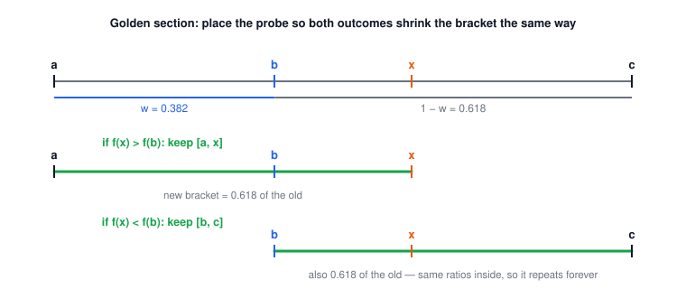
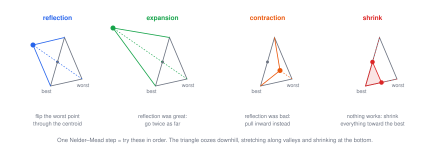
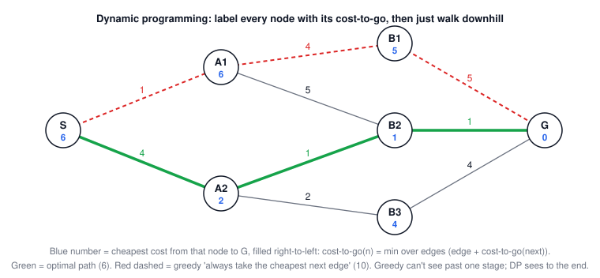

Lecture 6: Optimization
CSE 276C, Lecture 6 · Prof. Henrik Christensen · Numerical Recipes ch. 10, Numerical Renaissance ch. 14–16. All numbers verified in
scripts/lec6/verify.py.The big picture
Lecture 5 solved f(x) = 0. Setting the derivative to zero turns that machinery into minimization — but this lecture mostly avoids derivatives entirely, because robot objective functions (simulation rollouts, collision costs, sensor models) often don't come with them. Minimum vs maximum is immaterial: flip the sign of f.
compare 3 values (golden section) → fit a parabola (Brent) → crawl a polytope (simplex) → line-search smartly (Powell, CG) → gamble (annealing) → enumerate stages (DP)
| robotics problem | what you have | what you need | method |
|---|---|---|---|
| trajectory time/energy tuning | a cost you can simulate | best parameters | simplex / Powell |
| model fitting to a point swarm | smooth least-squares cost | the minimizing parameters | conjugate gradient |
| path planning on a potential field | a cost landscape with local pits | a route to the goal | DP on a grid / annealing |
| task ordering (inspect N sites) | combinatorial tour space | a short tour | simulated annealing |
1 · Robotics is optimization
The slides' examples: best high-speed trajectory, best model fit to a data swarm, optimal coverage for fire monitoring, energy-efficient San Diego → Hawaii travel, and path planning on a potential field (the red route snaking between cost mountains). Different costumes, one question: which input makes this function smallest? Watch for two recurring villains: local minima and narrow curved valleys.
2 · 1-D first: bracketing an extremum
A root needs 2 points (a sign change). A minimum needs 3: \(a < b < c\) with \(f(b) < f(a)\) and \(f(b) < f(c)\) — then a minimum is trapped in \([a, c]\).
Where to probe next? Demand that both possible outcomes shrink the bracket by the same factor, and that the ratios inside stay the same forever (self-similarity). With \(w = \frac{b-a}{c-a}\) that gives:
$$w^2 - 3w + 1 = 0 \;\Rightarrow\; w = \frac{3 - \sqrt 5}{2} \approx 0.38197$$| symbol | meaning |
|---|---|
| \(w \approx 0.382\) | the short fraction of the bracket — where b sits, and where the probe goes in the long half |
| \(1 - w \approx 0.618\) | bracket shrink factor per evaluation (the golden ratio conjugate) |

Worked example: how fast is 0.618 per step? (click to open)
40 evaluations on \((x-2)^2 - 10\) starting from bracket [−2, 10]: final bracket width \(12 \times 0.618^{40} \approx 4 \times 10^{-8}\), b lands on 2.0000000 ✓. Like bisection, it's linear convergence — reliable, indifferent to the function, never fast.
3 · Parabolic interpolation: Brent, minimization edition
Through 3 points there is one parabola; jump to its vertex:
$$x = b - \frac12\,\frac{(b-a)^2[f(b)-f(c)] - (b-c)^2[f(b)-f(a)]}{(b-a)[f(b)-f(c)] - (b-c)[f(b)-f(a)]}$$On a quadratic it lands exactly in one step (verified: from (0, 1, 4) on \((x-2)^2-10\) it returns 2.0). When does it fail? When the three points are collinear — the denominator goes to zero and the "parabola" is a line with no vertex. The remedy is the same Brent pattern as Lecture 5: try the parabolic jump, fall back to golden section when it's degenerate or lands outside. With \(f'(b)\) available, the derivative's sign picks which half to search — same bracket, better information.
4 · Downhill simplex (Nelder–Mead): no gradients, no model
In N dimensions, take N+1 points (a triangle in 2-D, tetrahedron in 3-D). One move per iteration, tried in order — sort vertices so \(f(x_1) \le \dots \le f(x_{N+1})\), let \(\bar x\) be the centroid of all but the worst:
$$\text{reflect: } x_r = \bar x + \alpha(\bar x - x_{N+1}) \quad\to\quad \text{expand } (\gamma) \;/\; \text{contract } (\rho) \;/\; \text{shrink } (\sigma)$$| move | when | standard coefficient |
|---|---|---|
| reflection | always try first: flip the worst vertex through the centroid | α = 1 |
| expansion | reflection beat the best point → go further | γ = 2 |
| contraction | reflection still worst-ish → pull inward | ρ = 0.5 |
| shrink | even contraction failed → collapse toward the best vertex | σ = 0.5 |

🕹️ Try it: step the triangle across three landscapes. two valleys shows the local-minimum trap that motivates Section 7.
Verified: this exact algorithm drives Rosenbrock's banana from (−1.2, 1) to the minimum (1, 1) — slowly, but with zero derivative evaluations. It's scipy.optimize.minimize(method='Nelder-Mead').
5 · Powell's method: line searches in smart directions
Near a minimum every smooth function looks quadratic:
$$f(\vec x) \approx c - \vec b \cdot \vec x + \tfrac12 \vec x^T A \vec x, \qquad A_{ij} = \frac{\partial^2 f}{\partial x_i \partial x_j} \;\;(\text{the Hessian}), \qquad \nabla f = A\vec x - \vec b$$Powell's recipe: keep N directions \(u_i\) (initially the coordinate axes). Minimize along each in turn (a 1-D search from Section 2–3 each time), then replace one direction with the overall displacement \(P_n - P_0\) — the "average" direction that actually helped — and repeat. On a quadratic, the directions become mutually conjugate (\(u_i^T A\, u_j = 0\)), which makes successive line searches stop undoing each other.
6 · Steepest descent zigzags; conjugate gradient doesn't
With gradients available, the obvious move is downhill: \(P_{i+1} = P_i - \lambda \nabla f(P_i)\). With exact line search each step is perpendicular to the last — in a stretched valley that means zigzagging, paying for the same wall over and over. Conjugate gradient fixes the direction, not the step size:
$$g_{i+1} = g_i - \lambda_i A h_i, \qquad h_{i+1} = g_{i+1} + \gamma_i h_i, \qquad \lambda_i = \frac{g_i^T g_i}{h_i^T A h_i}, \qquad \gamma_i = \frac{g_{i+1}^T g_{i+1}}{g_i^T g_i}$$| symbol | meaning |
|---|---|
| \(g_i\) | current (negative) gradient — the raw "downhill" |
| \(h_i\) | actual search direction: new gradient plus a memory of the old direction |
| \(\gamma_i\) | how much memory to keep (Fletcher–Reeves ratio) |
| conjugate | \(h_i^T A h_j = 0\): new steps don't re-disturb directions already minimized |
🕹️ Try it: stretch the valley with the κ slider and drag the start. Count blue dots vs green dots.
Worked example: κ = 25 (click to open)
On \(f = \tfrac12(x^2 + 25y^2)\), steepest descent contracts the error by \(\frac{\kappa - 1}{\kappa + 1} = \frac{24}{26} = 0.923\) per step — 18 steps to reach \(10^{-6}\) from (10, 1). Conjugate gradient: error \(9.5 \to 2\times10^{-15}\) in 2 steps, because an n-dimensional quadratic has exactly n conjugate directions to spend. ✓ verified.
7 · Stochastic search: when downhill isn't enough
Every method so far goes downhill, so every one gets trapped by the first local minimum (and for discrete spaces like tours there's no "downhill" at all). The fix is principled randomness, borrowed from physics. A system at temperature T occupies states by the Boltzmann distribution \(P(E) = e^{-E/kT}\); Metropolis (1953) turned it into an algorithm:
$$\text{accept a move with } \Delta E > 0 \text{ with probability } e^{-\Delta E / T} \qquad (\text{always accept } \Delta E \le 0)$$Simulated annealing = Metropolis + a cooling schedule. The slides' four ingredients: (1) a state description, (2) a random perturbation move, (3) an objective E, (4) a temperature lowered over time. Hot → bold exploration; cold → greedy refinement; frozen → done.
🕹️ Try it: the slides' travelling-salesman example, live. Run anneal, then quench on the same cities — greedy freezes worse (3.953 vs 3.706; true optimum 3.634).
8 · Dynamic programming: optimal by construction
When the problem is a staged graph — finitely many states, finitely many actions per state — stop searching and enumerate smartly. Bellman's principle: any tail of an optimal path is itself optimal. So sweep backward from the goal, labeling each node with its cost-to-go:
$$V(n) = \min_{\text{edges } n \to m} \big[\, c(n, m) + V(m) \,\big], \qquad V(\text{goal}) = 0$$then the optimal route is read off by walking downhill in V. That's Dijkstra, Viterbi, and grid path planning in one picture:

9 · Summary
- Extremum bracketing needs 3 points; golden section (0.618 per evaluation) is the bisection of minimization, and parabolic interpolation is its Brent-style accelerator.
- No gradients? Simplex crawls anywhere, slowly. Smooth near-quadratic cost? Powell/CG exploit conjugacy — CG finishes an n-D quadratic in n steps.
- Lumpy or discrete? Annealing buys global reach with randomness and patience.
- Staged and enumerable? DP is exact: cost-to-go + backtrack.
- Everything deterministic here is local — know which villain (local pits vs narrow valleys) your problem has before picking a weapon.
| method | one-line idea | needs | use it when |
|---|---|---|---|
| golden section | self-similar 3-point bracket shrinking | f values only, 1-D | robust 1-D line searches |
| parabolic (Brent) | jump to the fitted parabola's vertex | f values, 1-D | default 1-D minimizer |
| downhill simplex | reflect/expand/contract a polytope | f values only | few dims, nasty f, quick wins |
| Powell | line searches, directions learn conjugacy | f values + line search | smooth f, no gradients |
| conjugate gradient | gradient + memory = no zigzag | ∇f (and Av products) | large smooth least-squares |
| simulated annealing | Metropolis acceptance + cooling | a move generator | combinatorial / multimodal |
| dynamic programming | cost-to-go sweep + backtrack | enumerable stages | graphs, grids, exactness required |
⚠️ Typos / fine print in the slides
- Slide 16: "better than f(xN−1)" should be f(xN) (the second-worst) for the standard accept-reflection rule; "Initial simple" → simplex.
- Slide 16's contraction: xc = x₀ + ρ(xN+1 − x₀) with ρ < .5 — Numerical Recipes and common practice use ρ = 0.5 exactly; also compare against f(xr) (outside contraction) in full implementations.
- Slide 20: f(x) ≈ c − bx + ½xᵀAx: the sign convention means b = −∇f(P) at the expansion point; and "∇f = Ax − b" matches that same convention.
- Slide 23: λ formula "gigj" → giᵀgi; these are the Fletcher-Reeves updates.
- Slide 26 (Metropolis): "If (P(S,T) ≤ random(0,1))" — the accept test is random(0,1) < exp(−ΔE/T), i.e. accept when the coin is under the Boltzmann factor; as written the inequality is flipped/underspecified (ΔE missing).
- Slide 21 (Powell step 3): "Move along Pi from Pi−1 along ui" → move to Pi, the minimum along ui from Pi−1.